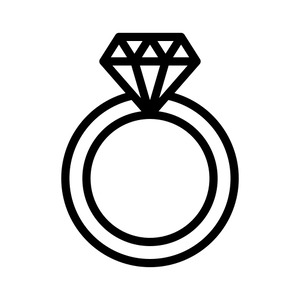
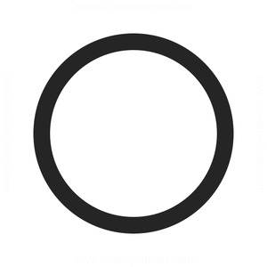

ⲝⲟⲩⲣ, ⲕⲥⲟⲩⲣ (CO 342), ϭⲥⲟⲩⲣ (PMich 4567) S, ϣϭⲟⲩⲣ B nn m, a finger-ring: Ge 38 18 B, Nu 31 50 SB, Lu 15 22 SB δακτύλιος, Ja 2 2 SB χρυσοδακ.; ShMIF 23 149 S ⲟⲩⲝ. ϩⲛⲛⲉϥⲧⲏⲏⲃⲉ, BMis 41 S sim, BKU 1 329 ⲉⲩϫⲓ ⲝ. ⲉⲛⲉⲩⲧⲏⲏⲃⲉ, BMar 18 S ⲁϥⲛⲟⲩϩⲉ ⲙⲡⲉϥⲝ. ⲉⲧϩⲙⲡⲉϥⲧ.; esp. for sealing: Est 3 10 S, Dan 6 17 B, Cl 43 2 A δακ., Ez 28 12 B (S ⲥⲫⲣⲁⲅⲓⲥ), ἀποσφράγισμα, Tri 269 S خاتم; Va 69 116 B treasury whereon ⲡⲁⲓϣ., Leip 24 36 B he sealed box ⲙⲡⲉϥϣ. ⲁϥϯ ⲙⲡⲉϥϣ. ⲉⲡⲉϥⲧⲏⲃ, Ryl 319 S ⲁⲓⲃⲟⲩⲗⲗⲓⲍⲉ ⲛⲡⲉⲓⲥⲓⲅⲉⲗⲗⲓⲛ ⲛⲡⲁⲝ., ib 154, BM 352 S sim, AM 11 B letter ⲁϥⲧⲟⲃⲥ ϧⲉⲛⲡⲉϥϣ. b as key (cf δακτυλοκλείδιον, Pomialowski Zhitie Prepod Paêsie 1900 72): R 1 5 42 S golden ⲝ. ⲉϥⲟ ⲛϣⲟϣⲧ…ⲉϣⲁϥⲟⲩⲱⲛ ⲛⲧⲕⲁⲯⲁ, BKU 1 299 S I send 2 ϣⲟⲩϣⲧ (l ϣⲟϣⲧ) that thou mayest ϯ ⲝ. ⲉⲣⲟⲟⲩ, ib ⲝ. ⲉⲩϣⲟⲟϭⲉ beaten, wrought (iron) keys, v Ep 397 n. c other rings: Ex 25 12, 37 3 B δακ., WS 94 S of a balance ⲙⲁϣⲉ. ⲥⲁ ⲛⲉⲝⲟⲩⲣ S nn, key-maker: BMOr 6201 A 180 ϩⲁⲡⲥⲁ ⲛⲉⲝ., PStras 46 letter begins ⲡ]ⲥⲁ ⲛⲉⲝ. ⲡⲣⲱⲙⲉ ϣⲙⲟⲩⲛ, BP 9517 S ⲯⲁ ⲛⲉⲝⲟⲩⲗ.
(noun male)
tool
finger-ring [δακτυλιος]
as key [δακτυλοκλειδιον]
other rings
as key [δακτυλοκλειδιον]
other rings


1: finger-ring, 2: ring
complete
121b
619b
619b
ϣϭⲟⲩⲣ B v ⲝⲟⲩⲣ.
See also:
Greek:
| view | ϩⲁⲗⲁⲕ SB ϩⲁⲗⲉⲕ SfF ϩⲁⲗⲏⲕ S ⲁⲗⲁⲕ SB | (noun female) ring [ξαλις, ξελλιον, κρικος]2152 |
| view | ⲗⲟⲟⲩ, ⲗⲟⲟⲩⲉ S ⲗⲱⲟⲩ SB ⲗⲁⲁⲩ, ⲗⲁⲩ S ⲗⲁⲩ BF | (noun male) curl of hair [σειρα, βοστρυχος]
ring, link in chain fringe (tasselled ?) bunch, cluster of dates1007 |
| view | plural: ⲣⲁⲙⲡⲉⲓ, ⲣⲁⲙⲡⲓ, ⲣⲁⲛⲡⲓ S | (noun) ring [δακτυλιος]1327 |
| view | ⲁⲣⲁ B | (noun male) door-ring2684 |
Greek:
| view |
|
|
||||||||||||||||||||||||